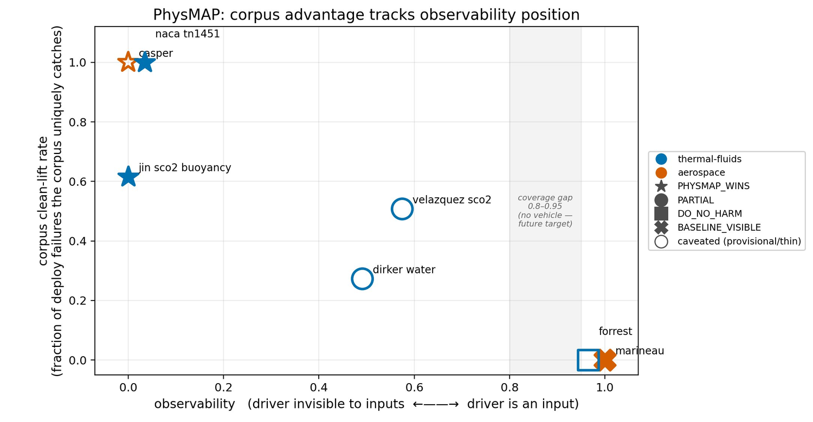

A surrogate doesn't fail where you're watching. It fails on a physics variable it never took as input. Distance-to-training and uncertainty checks watch the input space, so when the model is pushed past the validity bound of a variable it doesn't even read, they stay quiet. That quiet zone is where deployed surrogates go wrong.
53 published physics correlations, each with its validity bound, bound status, provenance, and geometry class. Hand-curated and literature-cited, so it can't be derived from your input statistics.
Each validity variable is classed as observable or unobservable to the surrogate's inputs. An unobservable breach is weighted higher, because that's the one your baseline structurally can't catch.
Every operating point gets a verdict (TRUSTWORTHY, WARN, REJECT, UNCERTAIN) with a plain rationale and no threshold tuning. Auditable, and it pins in CI.

Works on any learned surrogate that maps inputs to a physical quantity. Demonstrated on a 7-vehicle benchmark across thermal-fluids, aerospace, and hemodynamics, on real measured data, where the corpus localizes the failures a steelman statistical baseline stays silent on. Verdicts are emitted as machine-verifiable credibility evidence in the UofA vocabulary, with a NASA-STD-7009B pack for aerospace. It sits beside your UQ and out-of-distribution checks; it catches what they can't see, it doesn't replace them.
uofa.netgithub.com/cloudronin/uofa
Email physmap@uofa.net for a short session on the benchmark, baseline quiet versus corpus fires.
Send one surrogate you deploy and the operating point you use it at. I'll show you whether your current checks would have flagged it, and whether PhysMAP would.